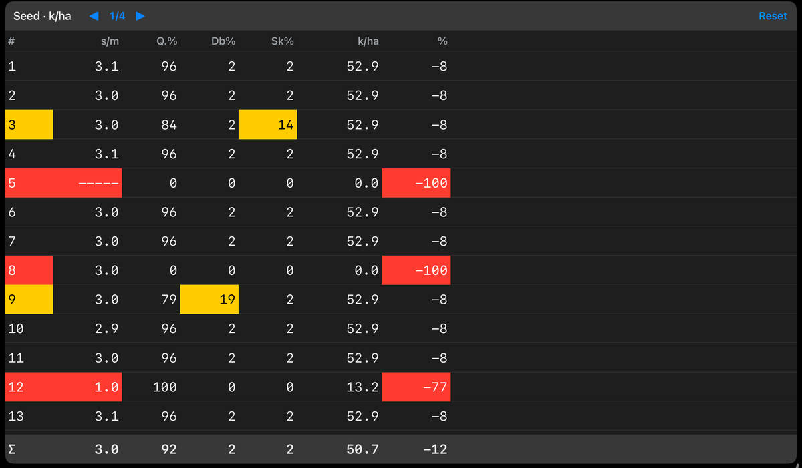

Die App
Die Tabelle
Jede Reihe in Zahlen — Menge, Qualität, Doppelbelegungen, Fehlstellen, Dichte und Abweichung — auf Seiten, mit der Summenzeile und den zurückgesetzten Zählern.
„Tabelle“ zeigt jede Reihe als Zeile aus Zahlen. Nutzen Sie sie, wenn ein Balken Ihnen sagt, dass etwas nicht stimmt, und Sie die Zahlen wollen.

- Die Seite — hier „Saatgut · Tsd/ha“. Tippen Sie auf den Titel, um zur nächsten Seite zu gehen.
- ◄ ► und die Seitenzahl — zur vorigen oder zur nächsten Seite.
- „Zurücksetzen“ — setzt die Zähler der Tabelle auf null. Es fragt zuvor nach: „Werte zurücksetzen?“ — „Ja“ oder „Nein“.
- Spaltenköpfe. Auf dieser Seite: Reihennummer, „K/m“ Körner je Meter, „Q.%“ Qualität, „Dp%“ Doppelbelegungen, „Fs%“ Fehlstellen, „Tsd/ha“ Tausend Körner je Hektar und % die Abweichung von der Sollmenge.
- Eine gelbe Zelle — der Wert liegt über der Hälfte seiner Alarmschwelle. Hier hat Reihe 3 14 % Fehlstellen.
- Eine rote Zelle — der Wert liegt über seiner Alarmschwelle. Hier hat Reihe 5 keinen Fluss: ----- statt der Menge.
- Die Abweichung von der Sollmenge, rot jenseits der Toleranz.
- Σ — die Summenzeile aller Reihen.
Die Seiten
Welche Seiten es gibt, hängt vom Überwachungsmodus jeder Gruppe ab (Einstellungen „Produkte“):
| Modus | Seiten |
|---|---|
| Einzelkorn | Drei Saatseiten: Tausend Körner je Hektar, Körner je Meter, Zähler; danach eine Düngerseite, wenn die Düngergruppe nicht im Modus Einzelkorn ist |
| Hybrid | Die Zählerseite, in Körnern je Meter |
| Durchfluss | Die Zählerseite, in Körnern je Sekunde |
Zeichen in der Mengenspalte
| Zeichen | Bedeutung |
|---|---|
| ----- | Kein Fluss in der Reihe |
| ! | Die Reihe ist aus der Überwachung genommen |
| X | Der Sensor wird nicht gefunden |
| ? | Das Gerät unter der Nummer der Reihe ist kein Kornsensor |
Reihen der Fahrgasse sind grau gestreift, wie auf dem Reihenbildschirm.
Was Sie tun können
| Um dies zu tun | Gehen Sie so vor |
|---|---|
| Das Menü einer Reihe öffnen | Tippen Sie auf ihre Zeile. Das Reihenmenü |
| Mehr Reihen sehen | Scrollen Sie die Zeilen nach oben oder unten. Ein seitliches Wischen blättert die Seite der App um. |
| Die Zähler auf null setzen | „Zurücksetzen“ → „Ja“ |
Ihre Maschine tut etwas, das diese Seite nicht beantwortet? Schreiben Sie an support@agriwelt.com — es antwortet ein Ingenieur.